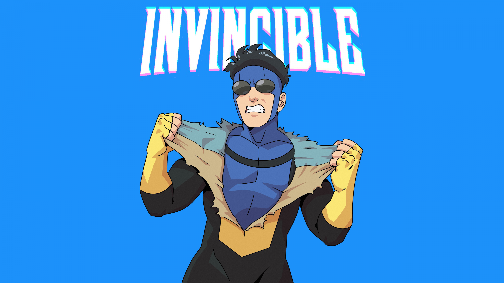

Education – I graduated from a school specializing in graphics and printing, earning a technical degree in these fields. Additionally, I continuously develop my skills and participate in various courses.
Work - I have experience working in a team within a company as well as independently as a freelancer.
